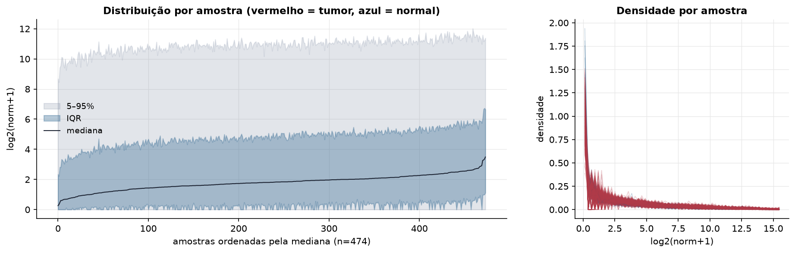
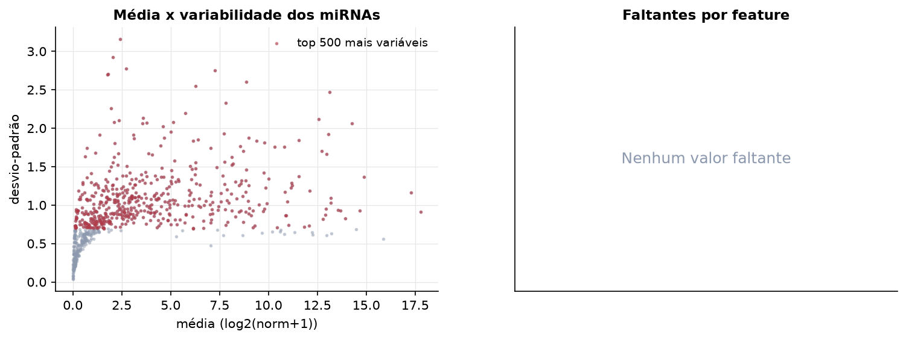
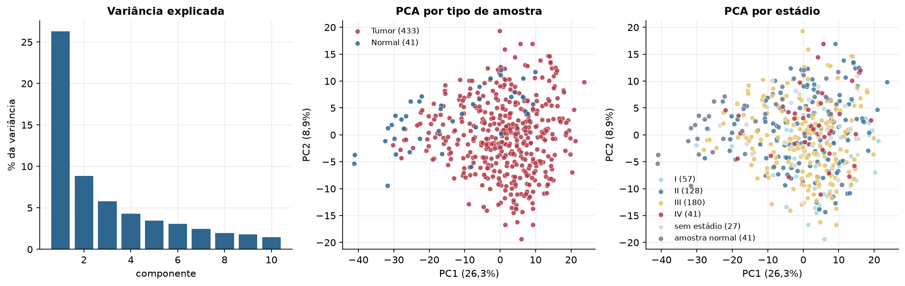
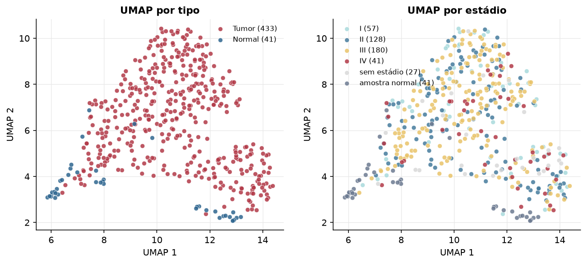
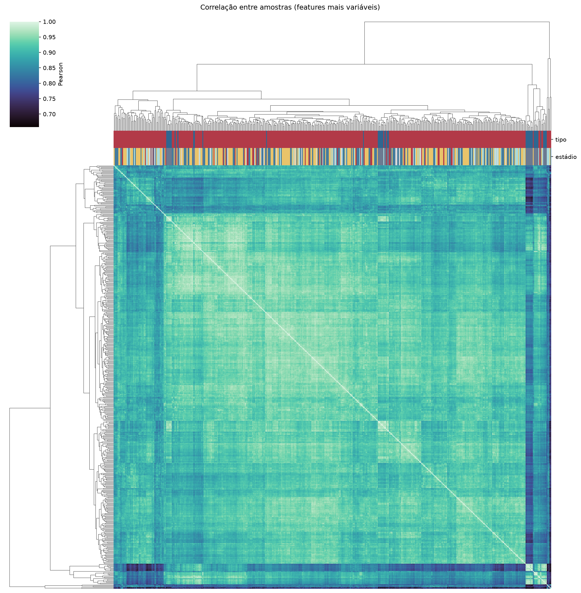
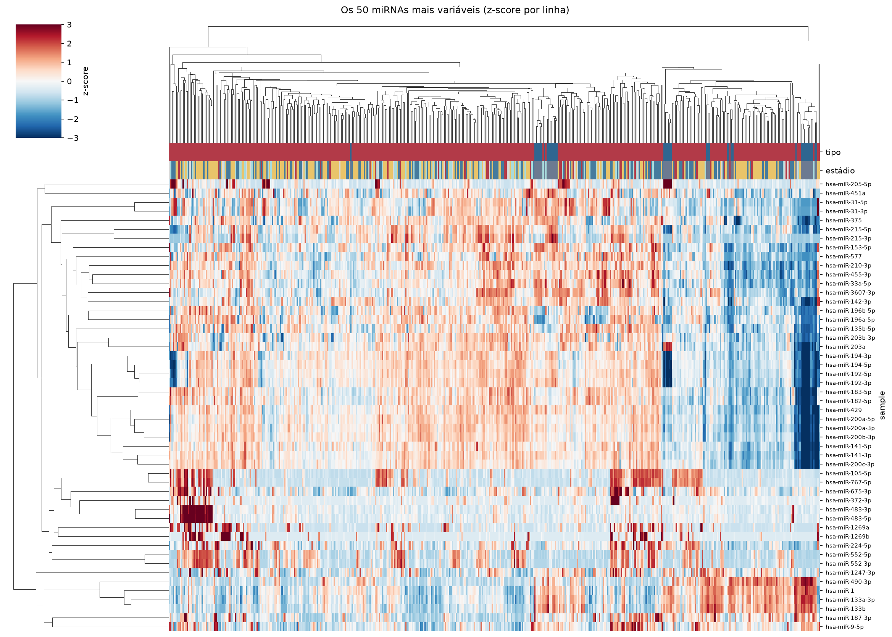
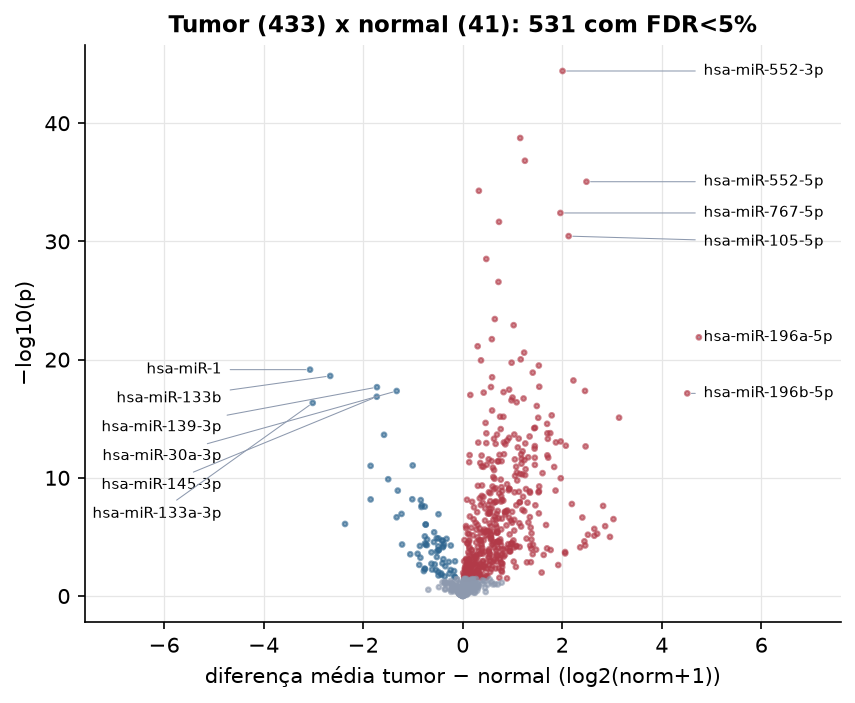
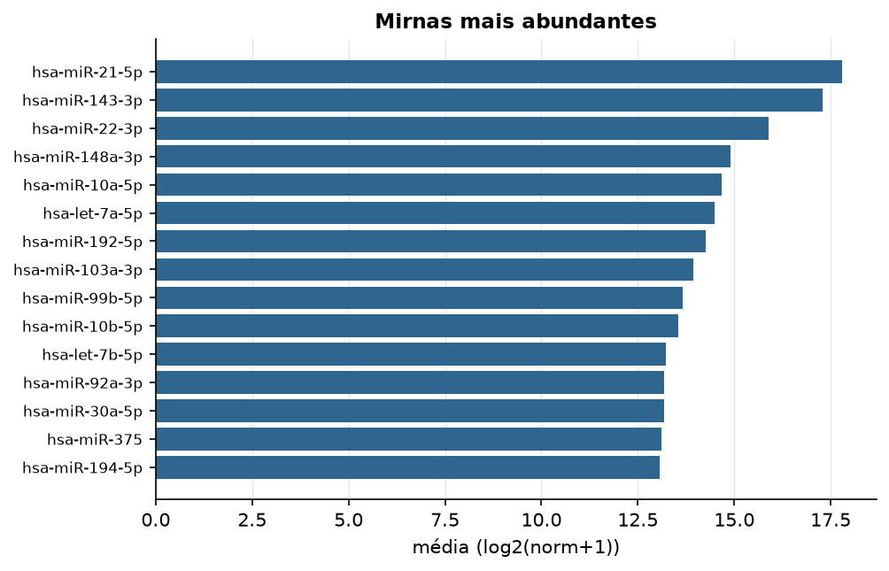

STAD · miRNA-seq (PanCanAtlas)
miRNA maduro, normalizado e corrigido por lote (EB), log2(x+1) · gerado em 22/10/2026 04:33
743miRNAs
433amostras tumorais
41amostras normais
0,0%valores faltantes
Fonte: PanCanAtlas (pancanMiRs_EBadjOnProtocolPlatformWithoutRepsWithUnCorrectMiRs_08_04_16.xena)
Fita madura (5p/3p) já normalizada. As contagens brutas por precursor estão no relatório de contagens.
Principais resultados
- 743 miRNAs medidos em 474 amostras (433 tumorais e 41 normais); 0,0% dos valores estão faltando.
- Os dois primeiros componentes principais explicam 26,3% e 8,9% da variância das features mais variáveis.
- Correlação mediana entre amostras: 0,92.
- Amostras com correlação muito abaixo das demais (possíveis outliers técnicos): TCGA-D7-6822-01, TCGA-BR-7723-01, TCGA-FP-7735-11, TCGA-FP-7829-11, TCGA-BR-8295-01, TCGA-HU-A4G3-11, TCGA-HU-A4GP-11, TCGA-HU-A4GC-11, TCGA-KB-A6F7-01, TCGA-VQ-A8DV-01.
- Tumor x normal: 531 miRNAs diferentes com FDR < 5% (458 maiores no tumor, 73 maiores no normal; 41 pacientes têm o par tumor-normal).
- Mais aumentados no tumor: hsa-miR-552-3p, hsa-miR-135b-3p, hsa-miR-937-3p, hsa-miR-552-5p, hsa-miR-196b-3p, hsa-miR-767-5p, hsa-miR-4652-5p, hsa-miR-105-5p.
- Mais reduzidos no tumor: hsa-miR-1, hsa-miR-133b, hsa-miR-139-3p, hsa-miR-30a-3p, hsa-miR-145-3p, hsa-miR-133a-3p, hsa-miR-139-5p, hsa-miR-195-5p.
- Associações clínicas com p < 0,05 nos componentes principais: PC1 com estádio (p=0.035); PC2 com estádio (p=0.00044); PC1 com idade (p=0.029); PC3 com idade (p=0.006); PC2 com sobrevida (p=0.0021).
Distribuição dos valores


Estrutura das amostras




Tumor x normal

Features mais diferentes entre tumor e normal
| sample | diferenca_tumor_menos_normal | t | p | fdr |
|---|---|---|---|---|
| hsa-miR-552-3p | 2.006 | 16.138 | 3.84e-45 | 2.85e-42 |
| hsa-miR-135b-3p | 1.155 | 18.702 | 1.79e-39 | 6.64e-37 |
| hsa-miR-937-3p | 1.25 | 16.409 | 1.5e-37 | 3.72e-35 |
| hsa-miR-552-5p | 2.486 | 14.819 | 8.94e-36 | 1.66e-33 |
| hsa-miR-196b-3p | 0.324 | 13.492 | 5.25e-35 | 7.79e-33 |
| hsa-miR-767-5p | 1.962 | 12.974 | 3.93e-33 | 4.87e-31 |
| hsa-miR-4652-5p | 0.729 | 12.816 | 2.23e-32 | 2.36e-30 |
| hsa-miR-105-5p | 2.128 | 12.561 | 3.57e-31 | 3.32e-29 |
| hsa-miR-548f-3p | 0.473 | 12.035 | 3.06e-29 | 2.53e-27 |
| hsa-miR-3687 | 0.718 | 12.731 | 2.68e-27 | 1.99e-25 |
| hsa-miR-767-3p | 0.644 | 10.724 | 3.72e-24 | 2.51e-22 |
| hsa-miR-431-5p | 1.023 | 14.342 | 1.23e-23 | 7.59e-22 |
| hsa-miR-196a-5p | 4.745 | 16.48 | 1.3e-22 | 7.4e-21 |
| hsa-miR-25-5p | 0.585 | 12.14 | 1.87e-22 | 9.92e-21 |
| hsa-miR-5589-3p | 0.3 | 10.151 | 7.42e-22 | 3.68e-20 |
| hsa-miR-615-3p | 1.234 | 12 | 2.57e-21 | 1.19e-19 |
| hsa-miR-877-5p | 1.165 | 12.739 | 9.58e-21 | 4.18e-19 |
| hsa-miR-5589-5p | 0.367 | 9.816 | 1.16e-20 | 4.78e-19 |
| hsa-miR-500b-3p | 0.982 | 12.698 | 1.83e-20 | 7.17e-19 |
| hsa-miR-935 | 1.529 | 11.751 | 3.17e-20 | 1.18e-18 |
| hsa-miR-1 | -3.068 | -13.701 | 7.06e-20 | 2.5e-18 |
| hsa-miR-92a-1-5p | 1.407 | 12.752 | 1.27e-19 | 4.28e-18 |
| hsa-miR-133b | -2.662 | -13.753 | 2.41e-19 | 7.78e-18 |
| hsa-miR-7974 | 0.59 | 10.655 | 3.11e-19 | 9.62e-18 |
| hsa-miR-335-3p | 2.224 | 13.333 | 5.83e-19 | 1.73e-17 |
| hsa-miR-181b-5p | 1.538 | 12.924 | 1.97e-18 | 5.64e-17 |
| hsa-miR-183-3p | 0.568 | 10.921 | 2.09e-18 | 5.69e-17 |
| hsa-miR-139-3p | -1.724 | -13.148 | 2.14e-18 | 5.69e-17 |
| hsa-miR-4746-5p | 0.932 | 11.479 | 3.47e-18 | 8.89e-17 |
| hsa-miR-21-5p | 2.457 | 14.635 | 4.45e-18 | 1.08e-16 |
Associação com variáveis clínicas
p-valores da associação dos três primeiros componentes principais (só tumores) com estádio (Kruskal-Wallis), sexo (Mann-Whitney), idade (Spearman) e sobrevida global (Cox univariado).
| estádio (Kruskal) | sexo (Mann-Whitney) | idade (Spearman) | sobrevida OS (Cox) | |
|---|---|---|---|---|
| PC1 (23,0%) | 0.035 | 0.449 | 0.029 | 0.42 |
| PC2 (9,6%) | 0.000437 | 0.108 | 0.085 | 0.002 |
| PC3 (5,8%) | 0.131 | 0.296 | 0.006 | 0.967 |
Mais abundantes
